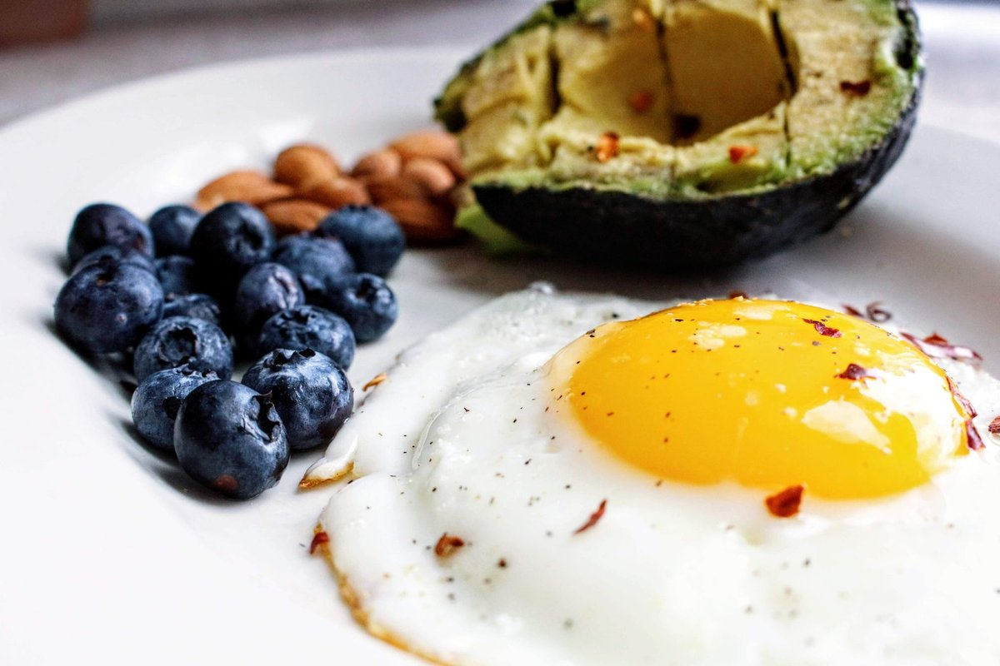

3 Practical Ways Leucine Does More Than Build Muscle

Key takeaways
- I used to stare at my giant tub of whey protein, convinced it was only good for bulking up my arms after a brutal gym session.
- I was exhausted, dragging through my 3 p.m.
- Focus on: 1. Pair Leucine with Morning Whole Foods.
I used to stare at my giant tub of whey protein, convinced it was only good for bulking up my arms after a brutal gym session. I was exhausted, dragging through my 3 p.m. work slump, and completely missing the bigger picture until I learned that Leucine Does More Than Build Muscle. It Powers Up Your Cells from the inside out.
For years, I thought this essential amino acid was strictly for bodybuilders obsessing over swole biceps. But when I actually looked into cellular energy, I realized leucine acts as a master light switch for your mitochondria—the tiny power plants inside your body.
When you start prioritizing this compound in your routine, your brain fog lifts and your daily stamina levels out. To keep your overall vitality high, check out this related healthy tip on balanced nutrition.
1. Pair Leucine with Morning Whole Foods
Instead of relying on synthetic powders right away, I started optimizing my breakfast with leucine-rich whole foods like pasture-raised eggs, cottage cheese, and pumpkin seeds. This simple shift gave me sustained mental clarity without the inevitable caffeine crash.
By hitting the ~3-gram leucine threshold early in the day, you signal your body to start cellular repair immediately. Read our another practical guide to see how early nutrition impacts long-term metabolic health.
Pro-Tip: You don't need expensive isolated supplements if you eat quality protein sources; 1 cup of Greek yogurt combined with a handful of hemp seeds gets you dangerously close to the optimal cell-triggering leucine dose.
2. Fuel Muscle and Cellular Autophagy Post-Workout
After a workout, your cells are primed to absorb nutrients and clear out cellular debris. Feeding your body leucine during this window doesn't just synthesize muscle tissue; it enhances cellular turnover.
I noticed a huge drop in my overall fatigue once I prioritized post-workout leucine intake consistently. You can dive deeper into recovery strategies with this similar wellness insight.
The 2-Minute Win
Add 2 tablespoons of raw pumpkin seeds or a scoop of unflavored collagen and BCAA mix to your afternoon tea or water. It takes two minutes and instantly delivers a functional dose of amino acids to jumpstart your cellular engines.
3. Optimize Your Evening Protein Distribution
Most Americans backload all their protein into a massive dinner, which leaves cells starving for fuel throughout the day. I revamped my routine to space my protein evenly, ensuring my cellular machinery stays active without overloading my digestion before bed.
Spacing your leucine intake supports steady blood sugar and keeps your metabolic rate smooth. Take a look at how to stay consistent with this approach without losing your mind over macro counting.
Understanding that Leucine Does More Than Build Muscle. It Powers Up Your Cells completely changed my daily relationship with food. Feel free to explore more healthy-habits guides to build a sustainable, energetic lifestyle.
Educational only — not medical advice.
Recommended Reading
- Unlock Better Sleep: Quality Sleep Strategies for Optimal Health & Energy
- Unlock Your Energy: Master Blood Sugar Levels
- The Ultimate Guide to Daily Hydration: Boost Energy & Wellness
More in healthy-habits
 healthy-habits
healthy-habitsFenugreek May Help Sexual Function, Period Pain, And Lactation
Discover how Fenugreek May Help Sexual Function, Period Pain, And Lactation with practical, science-backed tips to balan
Read article → healthy-habits
healthy-habitsHow I Made Walking for Health Stick for Real Weight Loss
Discover how Walking for Health transformed my weight management journey with sustainable, low-impact routines. Simple s
Read article →Related posts
healthy-habitsFenugreek May Help Sexual Function, Period Pain, And Lactation
Discover how Fenugreek May Help Sexual Function, Period Pain, And Lactation with practical, science-backed tips to balan
Read article →healthy-habitsHow I Made Walking for Health Stick for Real Weight Loss
Discover how Walking for Health transformed my weight management journey with sustainable, low-impact routines. Simple s
Read article → healthy-habits
healthy-habitsWhat Nobody Tells You About High Protein Breakfast
Discover why a high protein breakfast transformed my energy levels, fueled my active days, and finally ended my 10 AM mi
Read article →